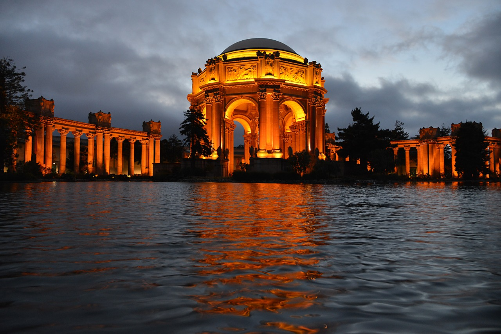

Java Projects
Java Math Game
Engineered a math game that allows
people of all ages to practice addition,
subtraction, mutliplication, and division
problems via a GUI. Added vibrant colors,
JButtons, and labels to present a fun and
interactive game for children.
Available Java Development Jobs:
(Aspera) Software Engineer, Emeryville, CA
(SYNTEL) Software Engineer, San Francisco, CA
(SynergisticIT) Java Developer, San Francisco, CA
(Redolent, Inc) Junior Java/ J2EE, San Francisco, CA
(SAP) QA Engineer, San Francisco, CA